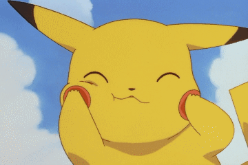

Peço desculpas pelo mistério e pela enrolação até agora. Às vezes, a vida precisa de um pouco de suspense para nos lembrar da beleza do inesperado, como quando Neo escolheu a pílula vermelha em "Matrix". Assim como ele, quero te convidar a explorar um mundo de novas possibilidades e profundidade.
Vamos sair e encontrar um lugar onde possamos desfrutar da companhia um do outro. Imagine que, como Neo, estamos questionando a realidade e buscando um significado maior. Camus nos ensina que, em um universo aparentemente sem sentido, somos nós que devemos criar nosso próprio propósito. O que você acha da gente ter um encontro, sei que pode ser do nada mas e bom desafiar o absurdo e encontrar nossa própria revolta contra a monotonia da vida cotidiana.
Mas, Beauvoir nos lembra que a liberdade é a essência da nossa existência, e com ela vem a responsabilidade de sermos autênticos. Tal como escolher entre a pílula azul e a vermelha, você pode escolher manter a amizade e nada disso aconteceu ou tentar apenas uma unica vez o incorreto kk. Assim, ao nos encontrarmos, podemos refletir sobre como nossas escolhas moldam nossa essência e como podemos, juntos, construir um futuro mais livre e verdadeiro.
Nossa conexão, como a de Neo com seus aliados, pode nos fortalecer e uam questão de maturidade. Vamos aproveitar essa oportunidade para fortalecer nossa amizade e descobrir novas maneiras de viver. Assim como a verdade se revelou para Neo, vamos descobrir novas perspectivas sobre a vida e encontrar a beleza na liberdade de pensamento.
Espero que aceite este convite para uma noite de conversas profundas, talvez risadas e a criação de memórias inesquecíveis. Vamos, juntos, escolher a pílula vermelha e embarcar nessa jornada ?.
Com carinho,
Dalison Lucas
